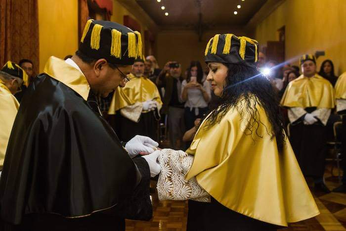
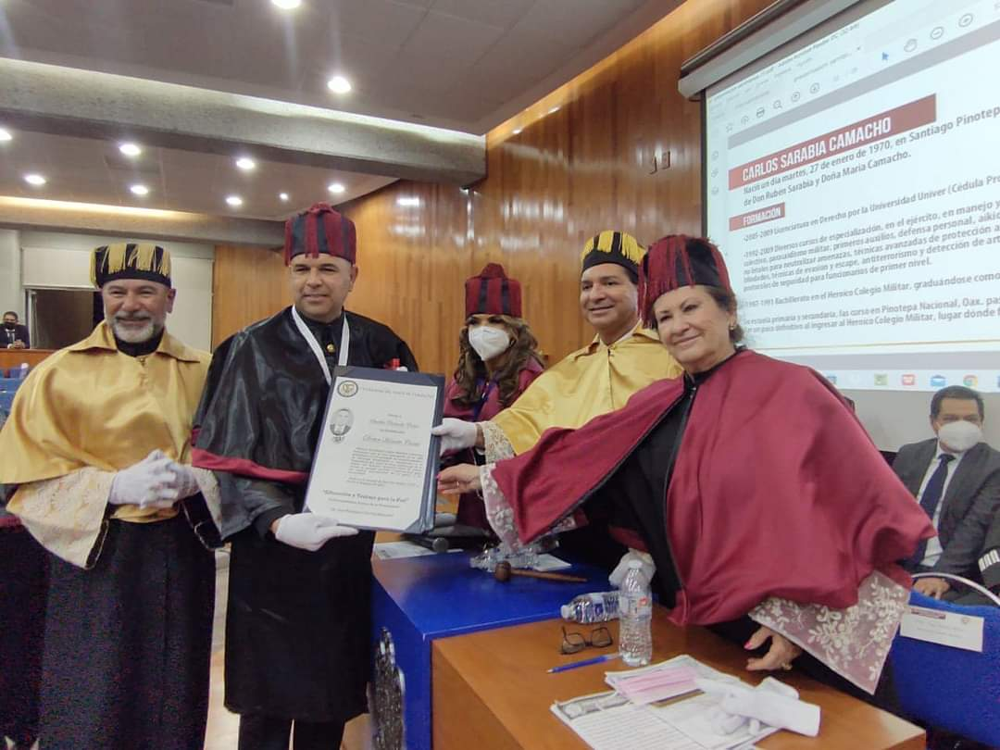

UNIVERSIDAD DEL NORTE DE TAMAULIPAS
UNIVERSIDAD DEL NORTE DE TAMAULIPAS
UNIVERSIDAD DEL NORTE DE TAMAULIPAS
UNIVERSIDAD DEL NORTE DE TAMAULIPAS
Home / Honoris Causa
Significa «por causa de honor» El doctorado Honoris Causa es la máxima distinción que hay en el mundo otorgado por una universidad. Esta designación se otorga principalmente a personajes que han destacado en ciertos ámbitos profesionales como reconocimiento a su trayectoria, en el ámbito académico, científico, cultural, ambiental, político, social, tecnológico etc. Los candidatos a Doctor o Doctora “Honoris Causa” pueden ser propuestos por integrantes del claustro Doctoral de la institución. En nuestra Universidad, reconocemos y valoramos la excelencia académica y los logros destacados en diversos campos. El Doctorado Honoris Causa es el máximo reconocimiento que otorgamos a personas que han dejado una huella significativa en la sociedad a través de sus contribuciones y logros excepcionales.
La ceremonia de investidura y otorgamiento de un Doctorado Honoris Causa, es una tradición que data del siglo XIV y poco ha cambiado desde entonces. La Universidad del Norte de Tamaulipas lleva a cabo dicho ceremonial con un riguroso apego al protocolo. Esta ceremonia está llena de símbolos, los cuales resaltan la importancia de dicho nombramiento, con el cual se confiere al Doctorante la responsabilidad y orgullo de unir sus esfuerzos por el bien de la institución de la que será parte como miembro de su claustro doctoral.

Eduación y trabajo para la paz.
subscribirse para recibir noticias importantes